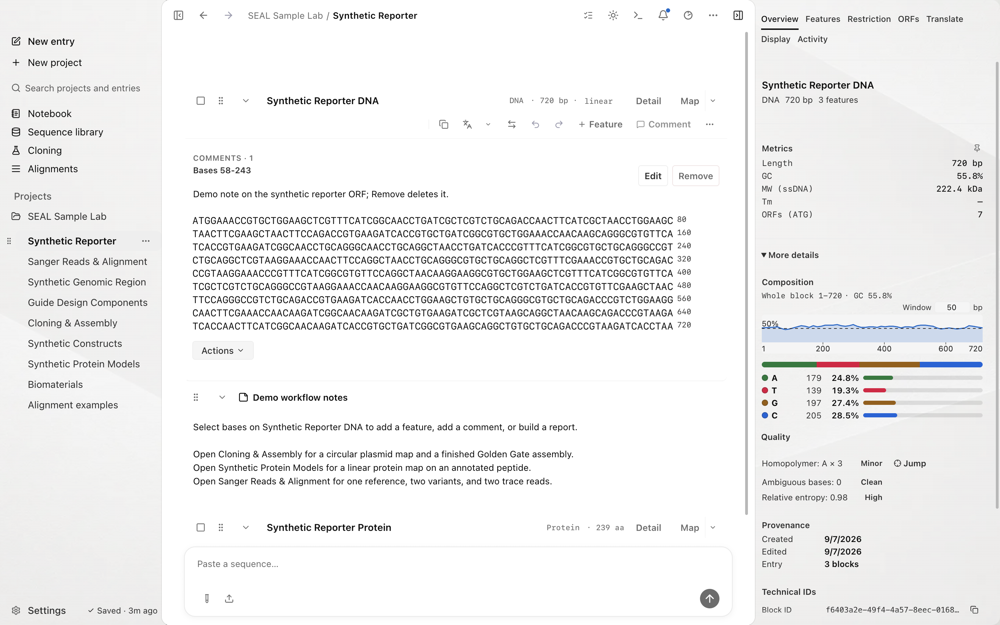

SEAL documentation
This guide includes source and direct-edition features. Check the edition comparison for the first Store release. Compare editions.
Edit and analyze DNA, RNA, and protein in a local macOS workspace. These guides cover sequence tools, cloning, alignments, Notebook, and connecting your coding agent.
For the product tour, see the overview, the workflows, and the worked examples.

Quickstart
Inspect the release-test Synthetic Reporter fixture, map cut sites, and scan its reading frames from the command line.
# From a SEAL source checkout
FIXTURE=tests/fixtures/release-bio/seal-synthetic-reporter.gb
# Map restriction sites across 154 enzymes
seal digest "$FIXTURE" --enzymes EcoRI,BamHI
# Translate frames and scan open reading frames
seal analyze "$FIXTURE" --min-orf-aa 50Video tutorials
Follow the app on screen, with captions and written steps for each lesson.
Your first workspace
Learn where to find sequences, maps, the Inspector, and lab notes.
Install SEAL
Build from an authorized source checkout, review the planned GitHub DMG, and learn about the future Mac App Store edition.
Quickstart
Go from a pasted sequence to a first analysis in a few minutes.
Core concepts
Workspaces, Entries, stable conversation API names, blocks, features, and the sequence model.
Sequence sources
Where sequences come from and which formats SEAL reads.
Restriction digest
Map and simulate cuts across 154 enzymes, linear or circular.
Primer design
Design and rank PCR primers with Tm, GC, and 3' clamp checks.
Cloning and assembly
Plan Gibson, Golden Gate, GoldenBraid, MoClo, ligation, and guided clone builds.
Sequence alignment
Pairwise and multiple alignment with selectable engines.
Translation and ORFs
Use live selection translation, all six frames, reverse-translation drafts, and ORF review.
Reports and packages
Export reports and zipped packages.
ESM design
Generate, insert, and mutate sequences with the biohub.ai ESM engine.
Codon optimizers
Optimize coding sequences with pluggable host profiles.
Notebook
A persistent, live-syncing lab notebook with sequence references.
Agent control plane
How external agents read and write the same local workspace.
Connect Claude Code
Point Claude Code at SEAL over MCP with one config.
Terminal dock
Launch a local agent CLI from inside SEAL.
Prompts and safety
Safety prompts and review patterns for agent edits.